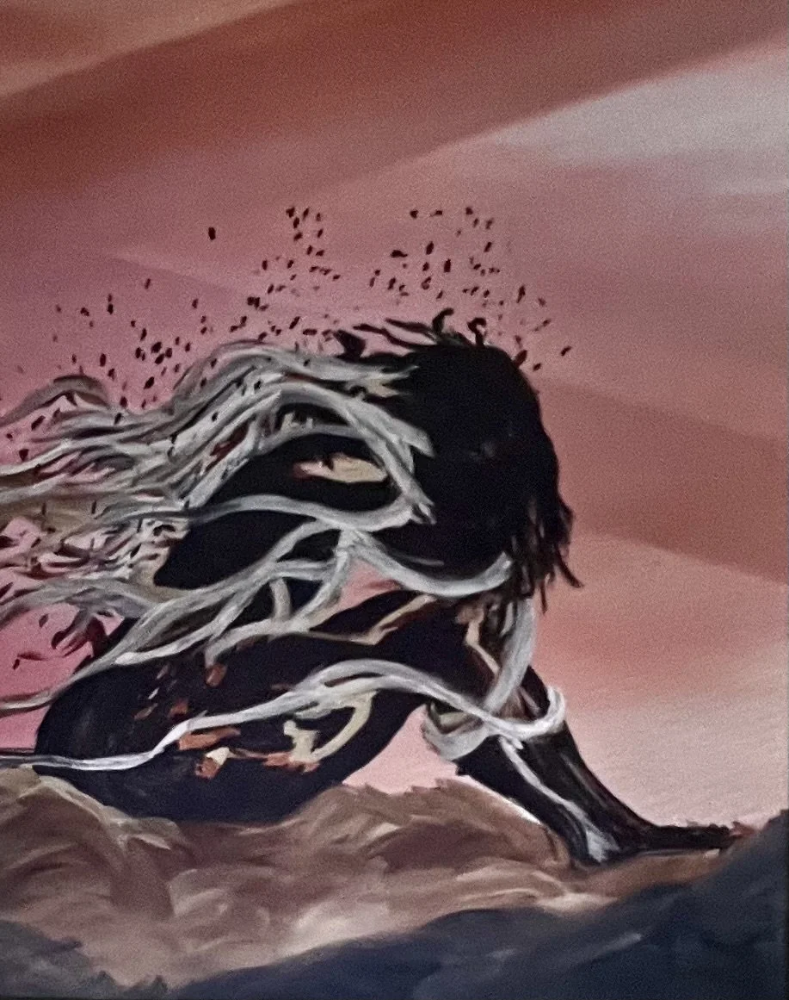
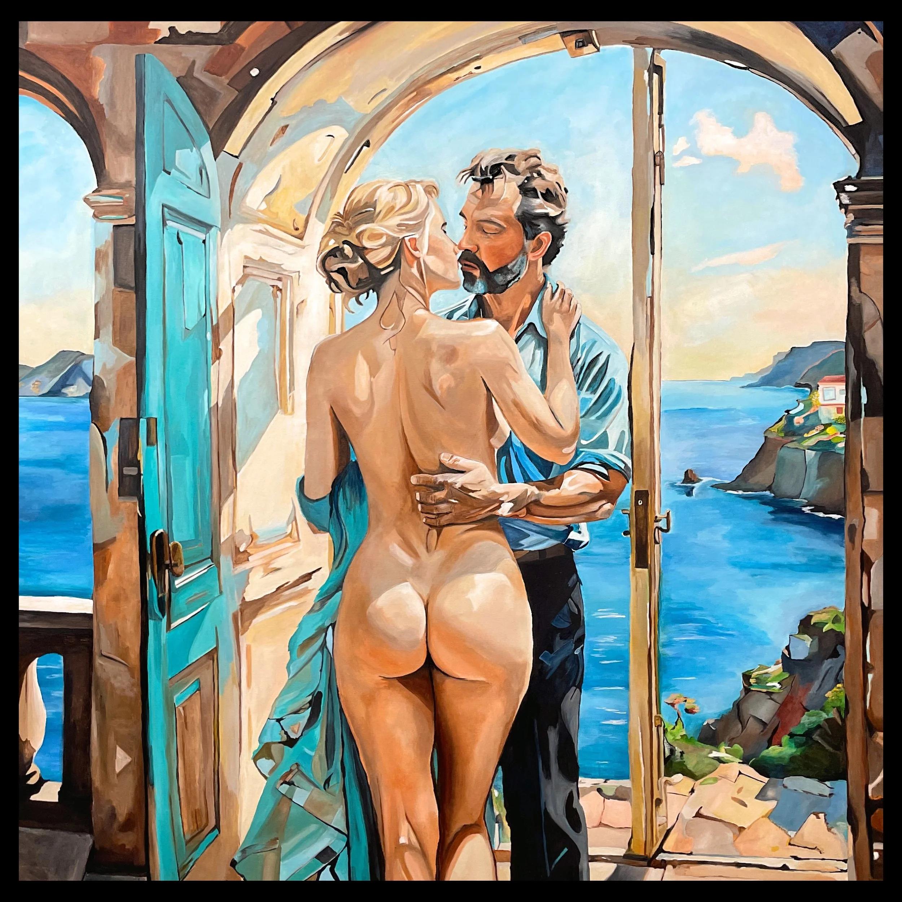

Perspectives from the press and from those who live with the work.
IN THE PRESS
Press & Publications
“At the core of Leigh’s practice is a belief that artists serve as visual historians. Her works are not just images but records of the time in which she lives, grief, intimacy, political uncertainty, and resilience captured in color and form.”
“Leigh’s artistic voice is distinct in its restraint. She avoids overly bright palettes, instead leaning into earth tones that invite viewers to see themselves within the frame. Her brushwork is urgent, sometimes impatient, which gives her compositions an honesty that feels immediate.”
“Leigh’s art holds a quiet intensity—the kind that arrives from lived experience rather than theory. Her work looks at relationships, the human body, and the emotions that live in the small, often unspoken moments.”
“For Leigh, a painting succeeds only if it captures the truth of a moment. She sees every work as part of a larger narrative about life, one made up of countless small stories.”
LIVING WITH ART
Collector Reflections

Grief
GRIEF
This piece really speaks to me. I can hear the sound of the wind as it blows through her hair, and the emotions it brings up are fierce. This woman could be grieving, or sad for another reason, but to me, she represents someone who is tired of battling forward in this crazy life.
Intimate Equality
INTIMATE EQUALITY
Intimate Equality – Leigh Witherell’s painting of two lovers is a deeply moving work that captures the essence of intimacy and human connection. The semi-nude figures of man and woman are portrayed with such tenderness that the composition radiates romance, affection, and a profound sense of security. Every brushstroke conveys warmth and vulnerability, inviting the viewer to feel the quiet strength of love in its purest form. It is a piece that not only enriches the room it hangs in, but also stirs the heart each time it is seen.

The Lover’s Kiss
THE LOVER’S KISS
I had the privilege of adding The Lover’s Kiss by Leigh Witherell to my collection, and it has quickly become the centerpiece of my home. The piece is absolutely stunning capturing the intimate, timeless feeling of looking out into a moment shared between two lovers along the Mediterranean. What makes it even more special is the way it’s displayed. The unique hanging that Leigh’s work specialises draws your eye from the side first, creating a sense of discovery before you’re met with the full beauty from the front. It’s truly unlike anything else I own. Every guest who visits comments on it, it’s the artwork that gets the most attention and admiration in my condo. Leigh has an excellent ability to create something both personal and universal, full of movement and soul. I feel fortunate to have found her at this stage of her career, and I’m excited to watch her continue to grow and collaborate with other artists.
The Wreck
THE WRECK
The water and boats are Joe’s favorites things. It looks amazing on the wall near the front door. Every time someone walks into the house they stop and stare at the painting. They couldn’t believe what an incredible painter you are.
A COLLECTOR’S HOME
We are fortunate to have several of Leigh Witherell’s artworks adorning our home, bringing warmth and character to nearly every room. The vibrant interplay of colors blends beautifully with our interior style, creating a harmonious atmosphere that feels both elegant and full of life. Each piece is not only a visual delight but also adds a unique sense of depth and personality to our living space. Among our favorites are Phoenix Rising, FOG, Sunflowers in Abstract, Emergence, Abstract in Gold, and Sisters, each with its own distinct energy, yet together forming a collection that feels perfectly at home with us.